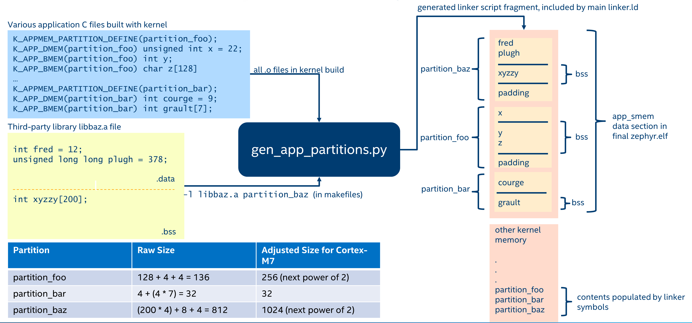

内存保护设计
Zephyr 的内存保护设计面向带有 MPU（内存保护单元）硬件的微控制器。我们也支持一些带有分页 MMU（内存管理单元）的架构，例如 x86，但这种情况下 MMU 是配合恒等页表当作 MPU 来使用的。
下文的所有讨论都使用 MPU 术语；带有 MMU 的系统可以看作拥有无限多个可编程区域的 MPU。
启用 Zephyr 内存保护特性后，内存访问的配置分为几个不同的层次，下面分别加以介绍：
启动时内存配置
这是内核启动后 MPU 的配置，应包含以下内容：
基本硬件和驱动功能所需的、具有特殊缓存或回写策略的内存区域配置。注意，大多数 MPU 都有默认内存访问策略映射的概念，可以将其启用为“背景”映射，作用于没有 MPU 区域配置的任何内存区域。强烈建议使用这一机制，以便为最终用户留出尽可能多的可用 MPU 区域。在 ARMv7-M/ARMv8-M 上，这称为系统地址映射（System Address Map），其他 CPU 可能也有类似的能力。关于如何在设备树中标注系统映射，参见 内存属性。
一个或多个只读、可执行的区域，用于存放用户模式可访问的程序代码段和只读数据。还可以进一步细分为用于只读数据的只读区域和用于代码段的只读可执行区域，但这需要额外占用一个 MPU 区域。之所以需要这些区域，是为了让运行在用户模式下的线程能够读取只读数据并取指令。
根据配置，可能还有用户可访问的读写区域，用于支持 GCOV、HEP 等额外特性。
假设存在允许管理态模式访问其所需任何内存的背景映射，并且定义了授予用户模式访问代码段/只读数据的区域，那么这对于启动时配置来说就足够了。
硬件栈溢出
CONFIG_HW_STACK_PROTECTION 是一项可选特性，用于在系统运行于管理态模式时检测栈缓冲区溢出。它捕获的是整个栈缓冲区溢出的问题，而非单个栈帧的溢出。要检测单个栈帧的溢出，请使用编译器辅助的 CONFIG_STACK_CANARIES。
与管理态模式下的任何崩溃一样，管理态模式栈溢出之后无法对系统的整体健康状况做任何保证，任何此类情况都应被视为严重错误。不过，了解这些溢出何时发生仍然非常有用，因为如果没有可靠的检测逻辑，栈缓冲区溢出时系统要么会以莫名其妙的方式崩溃，要么会表现出未定义的行为。
有些系统通过在运行时创建一个“保护”MPU 区域来实现这一特性，该区域被设为只读，位于管理态模式栈缓冲区的起始处或紧邻其前方。如果栈溢出，就会产生异常。
该特性是可选的，捕获用户模式下的栈溢出并不需要它；根据 MPU 设计，禁用它可能会腾出 1 到 2 个 MPU 区域。
其他系统可能有专门的 CPU 支持来捕获栈溢出，不需要额外的 MPU 区域。
线程栈
任何运行在用户模式下的线程都需要访问其自身的栈缓冲区。上下文切换到用户模式线程时，会用栈缓冲区的边界编程一个专用的 MPU 区域或 MMU 页表项。超出其栈缓冲区的线程会开始把数据压入它无权访问的内存，从而产生内存访问违例异常。
注意，用户线程可以访问同一内存域中其他用户线程的栈。这是架构支持内存域的最低要求。如果架构通过 CONFIG_ARCH_MEM_DOMAIN_SUPPORTS_ISOLATED_STACKS 声明具备相应能力，则可以进一步限制对栈的访问，使每个用户线程只能访问自己的栈。如果支持，该行为默认启用；如果架构同时支持两种工作模式，可以通过 CONFIG_MEM_DOMAIN_ISOLATED_STACKS 有选择地禁用。不过，有些架构可能决定始终启用该行为，此时该选项无法禁用。无论这些 Kconfig 选项如何设置，用户线程都无法访问其内存域之外的其他用户线程的栈。
线程资源池
有一小部分以系统调用方式调用的内核 API 需要从堆分配内存。这些内存仅供内核使用，用户模式无法直接访问。要使用这些系统调用，调用线程必须把自己分配给一个资源池，即一个 k_heap 对象。内存通过 z_thread_malloc() 从线程的资源池中获取，并通过 k_free() 释放。
使用资源池的 API 如下；对于不希望在应用程序中进行堆分配的用户，也列出了可选的替代方案：
k_stack_alloc_init()设置一个 k_stack，其存储缓冲区从资源池中分配，而不是使用用户提供的缓冲区。替代方案是用K_STACK_DEFINE()声明在启动时自动初始化的 k_stack，或者在管理态模式下用k_stack_init()初始化 k_stack。
k_msgq_alloc_init()设置一个 k_msgq 对象，其存储缓冲区从资源池中分配，而不是使用用户提供的缓冲区。替代方案是用K_MSGQ_DEFINE()声明在启动时自动初始化的 k_msgq，或者在管理态模式下用k_msgq_init()初始化 k_msgq。
k_poll()从用户模式调用时，需要在等待事件期间为所提供的事件数组在内核侧创建一份副本。无论k_poll()因何种原因返回，该副本都会被释放。
k_queue_alloc_prepend()和k_queue_alloc_append()会分配一个容器结构来存放数据，因为定义队列的内部簿记信息不能放在用户提供的内存中。
k_object_alloc()允许在运行时动态分配整个内核对象，并向调用者返回指向它的可用指针。
相关的 API 是 k_thread_heap_assign()，它为目标线程指定一个 k_heap，上述分配将从中获取内存。
如果启用了系统堆，可以通过 k_thread_system_pool_assign() 使用系统堆，但最好让系统上运行的不同逻辑应用程序各自拥有自己的池。
内存域
内核确保任何用户线程都能访问其自身的栈缓冲区以及程序代码段和只读数据。要授予用户线程访问更多内存块的权限，需要使用内存域 API。
从概念上讲，内存域是若干内存分区的集合。一个域中内存分区的最大数量受可用 MPU 区域数量的限制。这就是为什么要尽量减少启动时 MPU 区域的数量。
内存域 并非 用于控制管理态模式对内存的访问。在某些情况下这可能无法避免；例如有些架构无法定义对用户模式只读、对管理态模式可读写的区域。处理这类区域时必须格外小心，以免内核在访问此类区域时意外崩溃。任何试图用内存域 API 控制管理态模式访问的做法，充其量也只是未定义行为；管理态模式的访问策略只应由启动时内存区域控制。
内存域 API 只能在管理态模式下使用。用户模式对内存域唯一的控制是：任何用户线程的子线程都会自动成为父线程所在域的成员。
所有线程都是某个内存域的成员，包括管理态线程（尽管这对其内存访问没有影响）。存在一个默认域 k_mem_domain_default，如果线程没有被明确分配到某个域，也没有从父线程继承内存域成员身份，就会被分配到该默认域。主线程一开始就是默认域的成员。
内存分区
每个内存分区由内存地址、大小和访问属性组成。内存分区用于控制对系统内存的访问。定义内存分区须遵守以下约束：
分区所表示的内存区域必须能由底层内存管理硬件编程，并且需要符合底层硬件的各项约束。例如，许多基于 MPU 的系统要求分区大小为 2 的幂，并按自身大小对齐。对于基于 MMU 的系统，分区必须按页对齐，大小必须是页大小的整数倍。
同一内存域中的分区不得相互重叠。内存域内的各分区之间没有优先级的概念。内存域中的分区被认为比任何启动时内存区域具有更高的优先级，但内存域分区能否与启动时内存区域重叠取决于具体架构。
同一个分区可以出现在多个内存域中。例如，可能存在一块由多个域共同授权访问的共享内存区域。
确定在分区中暴露哪些内存时必须谨慎。不应让用户模式直接访问任何包含内核私有数据的内存。
内存域分区用于控制对系统 RAM 的访问。架构可能不支持配置与 RAM 不对应的内存分区；基于 MMU 的系统就是如此。
定义内存分区有两种方式：手动或自动。
手动内存分区
以下代码声明了一个全局数组 buf，然后为它声明一个可以加入域的读写分区：
uint8_t __aligned(32) buf[32];
K_MEM_PARTITION_DEFINE(my_partition, buf, sizeof(buf),
K_MEM_PARTITION_P_RW_U_RW);
当我们想把分散在多个 C 文件中的多个对象纳入同一个分区时，这种方式的可扩展性不太好。
自动内存分区
自动内存分区由构建系统创建。所有需要放入分区的全局变量都会标注其目标分区。构建系统随后会把它们合并到一块连续的内存中，在启动时将所有 BSS 变量清零，并定义一个基地址和大小合适、包含所有已标注数据的内存分区。

自动内存分区只能配置为读写区域，使用 K_APPMEM_PARTITION_DEFINE() 定义。然后使用 K_APP_DMEM()（用于已初始化数据）和 K_APP_BMEM()（用于 BSS）把全局变量放入该分区。
#include <zephyr/app_memory/app_memdomain.h>
/* Declare a k_mem_partition "my_partition" that is read-write to
* user mode. Note that we do not specify a base address or size.
*/
K_APPMEM_PARTITION_DEFINE(my_partition);
/* The global variable var1 will be inside the bounds of my_partition
* and be initialized with 37 at boot.
*/
K_APP_DMEM(my_partition) int var1 = 37;
/* The global variable var2 will be inside the bounds of my_partition
* and be zeroed at boot size K_APP_BMEM() was used, indicating a BSS
* variable.
*/
K_APP_BMEM(my_partition) int var2;
构建系统会确保 my_partition 的基地址正确对齐，并且区域总大小符合内存管理硬件的要求，必要时会添加填充。
如果要创建多个分区，可以使用 app_macro_support.h 中提供的可变参数预处理宏：
FOR_EACH(K_APPMEM_PARTITION_DEFINE, part0, part1, part2);
静态库全局变量的自动分区
设置自动内存分区的构建时逻辑位于 scripts/build/gen_app_partitions.py 中。如果有静态库链接进 Zephyr，可以通过 --library 参数把该库中的所有全局变量放入特定的内存分区。
例如，如果启用了 Newlib C 库，所有 Newlib 全局变量都需要放入 z_libc_partition。顶层 CMakeLists.txt 中对该脚本的调用添加了以下内容：
gen_app_partitions.py ... --library libc.a z_libc_partition ..
对于预编译库，无法在项目级配置或构建文件中表达这一点；必须编辑顶层 CMakeLists.txt。
对于使用 zephyr_library 或 zephyr_library_named 创建的 Zephyr 库，可以使用 zephyr_library_app_memory 函数指定该库中所有全局变量应放入的内存分区。
预定义的内存分区
系统预定义了以下几个内存分区：
z_malloc_partition：该分区包含 libc malloc() 使用的系统级内存池。由于可能出现饥饿问题，不建议从全局池获取堆内存，更好的做法是定义多个 sys_heap 对象并将其分配给特定的内存域。
z_libc_partition：包含 C 库和运行时所需的全局变量。使用 Minimal C 库或 Newlib C 库时都需要该分区。启用CONFIG_STACK_CANARIES时也需要该分区。
各库专用的分区列在 include/zephyr/app_memory/partitions.h 中。例如，要在用户模式下使用 MBEDTLS 库，必须把 k_mbedtls_partition 加入域中。
内存域的使用
创建内存域
内存域使用 k_mem_domain 类型的变量定义，然后必须调用 k_mem_domain_init() 对其进行初始化。
以下代码定义并初始化一个空的内存域。
struct k_mem_domain app0_domain;
k_mem_domain_init(&app0_domain, 0, NULL);
向内存域添加内存分区
向内存域添加内存分区有两种方式。
第一个代码示例展示如何在创建内存域时添加内存分区。
/* the start address of the MPU region needs to align with its size */
uint8_t __aligned(32) app0_buf[32];
uint8_t __aligned(32) app1_buf[32];
K_MEM_PARTITION_DEFINE(app0_part0, app0_buf, sizeof(app0_buf),
K_MEM_PARTITION_P_RW_U_RW);
K_MEM_PARTITION_DEFINE(app0_part1, app1_buf, sizeof(app1_buf),
K_MEM_PARTITION_P_RW_U_RO);
struct k_mem_partition *app0_parts[] = {
app0_part0,
app0_part1
};
k_mem_domain_init(&app0_domain, ARRAY_SIZE(app0_parts), app0_parts);
第二个代码示例展示如何向已初始化的内存域逐个添加内存分区。
/* the start address of the MPU region needs to align with its size */
uint8_t __aligned(32) app0_buf[32];
uint8_t __aligned(32) app1_buf[32];
K_MEM_PARTITION_DEFINE(app0_part0, app0_buf, sizeof(app0_buf),
K_MEM_PARTITION_P_RW_U_RW);
K_MEM_PARTITION_DEFINE(app0_part1, app1_buf, sizeof(app1_buf),
K_MEM_PARTITION_P_RW_U_RO);
k_mem_domain_add_partition(&app0_domain, &app0_part0);
k_mem_domain_add_partition(&app0_domain, &app0_part1);
备注
内存分区的最大数量受 MPU 区域的最大数量或 MMU 表的最大数量限制。
内存域的分配
任何线程都可以加入内存域，任何内存域都可以分配多个线程。通过以下 API 调用把线程分配给内存域：
k_mem_domain_add_thread(&app0_domain, app_thread_id);
如果线程已经是其他某个域（包括默认域）的成员，则会将其从原来的域中移除，改为加入新的域。
此外，如果某个线程是内存域的成员，它创建的子线程也会属于该域。
从内存域中移除内存分区
以下代码展示如何从内存域中移除内存分区。
k_mem_domain_remove_partition(&app0_domain, &app0_part1);
k_mem_domain_remove_partition() API 会查找与给定参数匹配的内存分区，并将该分区从内存域中移除。
可用的分区属性
定义分区时，需要为其设置访问权限属性。由于内存分区的访问控制依赖于 MPU 或 MMU，可用的分区属性与架构相关。
特定架构可用分区属性的完整列表位于架构相关的头文件 include/zephyr/arch/<arch name>/arch.h 中（例如 include/zephyr/arch/arm/arch.h）。分区属性示例如下：
/* Denote partition is privileged read/write, unprivileged read/write */
K_MEM_PARTITION_P_RW_U_RW
/* Denote partition is privileged read/write, unprivileged read-only */
K_MEM_PARTITION_P_RW_U_RO
几乎在所有情况下，K_MEM_PARTITION_P_RW_U_RW 都是正确的选择。
配置选项
相关配置选项：
API 参考
include/zephyr/kernel.h 提供了以下内存域 API：
- mem_domain_apis